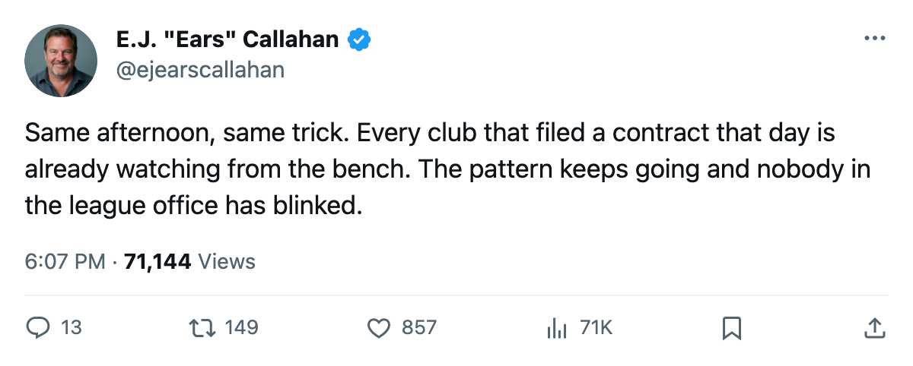
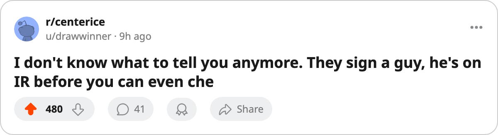

Sign-and-Injure, Round 6: 7 Clubs Filed 7 Contracts on Oct 17. Every One Is on IR Today. 🔥🔥🔥
The largest single-day batch since the pattern began. The free-agent pool still reads 0 names.
 E.J. "Ears" CallahanInsider · The Hot Stove
E.J. "Ears" CallahanInsider · The Hot Stove
Sign-and-Injure, Round 6: 7 contracts filed Oct 17, all 7 on IR

Seven contracts hit the league office on Oct 17. Every one of them is on a team's injured list as of today. That is the sixth wave of the pattern this desk has tracked since opening night, and it is the largest single-day batch yet.  Minnesota Wild,
Minnesota Wild,  Chicago Blackhawks,
Chicago Blackhawks,  Los Angeles Kings,
Los Angeles Kings,  Atlanta Thrashers,
Atlanta Thrashers,  Dallas Stars,
Dallas Stars,  Pittsburgh Penguins and
Pittsburgh Penguins and  Colorado Avalanche each filed one name that day.
Colorado Avalanche each filed one name that day.
 Bill Muckalt73 went to Minnesota for $270,660 and carries a hand designation with a return date of Nov 19. Deron Quint75 signed with Chicago at $149,950, groin, out until Nov 24.
Bill Muckalt73 went to Minnesota for $270,660 and carries a hand designation with a return date of Nov 19. Deron Quint75 signed with Chicago at $149,950, groin, out until Nov 24.  Ian Laperriere68 cost Los Angeles $640,260 and sits with a concussion, back Nov 13.
Ian Laperriere68 cost Los Angeles $640,260 and sits with a concussion, back Nov 13.
The fast returns are the part that makes you look twice.  Philippe Boucher75 signed with Dallas for $382,400, landed on IR with a shoulder between Oct 20 and Oct 22, and his return date is Oct 23. Steve Brule70 went to Atlanta for $424,320, took an ankle on the same window, and is expected back Oct 23. Both men signed on Oct 17 and were on injured reserve by Oct 20 at the earliest. The return date says they are back in 1 to 3 days. The body part says otherwise.
Philippe Boucher75 signed with Dallas for $382,400, landed on IR with a shoulder between Oct 20 and Oct 22, and his return date is Oct 23. Steve Brule70 went to Atlanta for $424,320, took an ankle on the same window, and is expected back Oct 23. Both men signed on Oct 17 and were on injured reserve by Oct 20 at the earliest. The return date says they are back in 1 to 3 days. The body part says otherwise.
Every contract in this wave is a depth deal. The highest is Laperriere at $640,260. The lowest is Quint at $149,950. A club signs a cheap player, the player's name appears on the injured list, and the roster situation changes. Six waves, same shape, and the free-agent pool has not gained a single name across all of them.
Charlie Stephens68, who went to Colorado for $557,420 with an elbow, is back Oct 25. A return that fast on an elbow designation raises a question the desk has no answer to.
Rico Fata73 is the outlier on time. The Pittsburgh right winger, filed at $163,730, carries an abdomen designation with a return date of Jan 12. He will miss the bulk of the season while the other six cycle back.
This is the sixth wave since opening night. In Rounds 1 through 5, the names arrived in batches of 1, 2 and 4. Seven in a single day, across seven different clubs, is a new shape. The desk cannot point to a league mechanism that would produce that timing by accident.
The desk rated this pattern at 🔥🔥 in Round 1 and moved it to 🔥🔥🔥 by Round 5. The pool reads 0 names.

